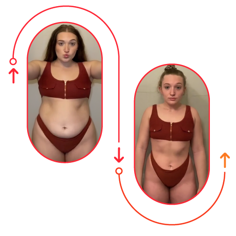
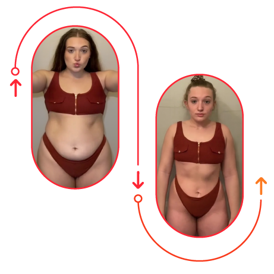
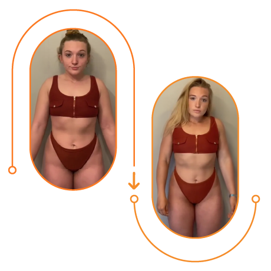
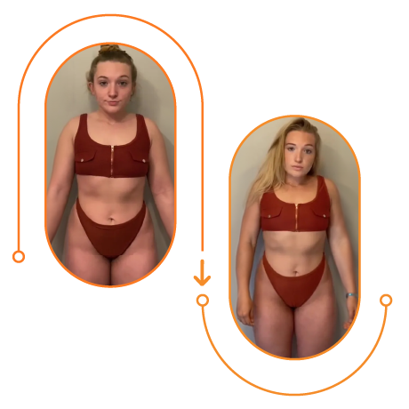

ACTUALITÉS > DIVERTISSEMENT / STYLE DE VIE
Comment j'ai perdu 19 Kilos en 4 semaines. Pas de régime, pas d'exercice, aucun comprimé
Ne luttez PLUS avec la perte de poids. Vous POUVEZ perdre jusqu'à 19 kilos en moins d'un mois en suivant cette méthode simple

Bonjour ! Carine Rogé, 36 ans, de Paris. Il y a un an, j'étais obèse, déprimée, malade et laissée par mon mari. Peu importe les efforts que je faisais, je ne pouvais pas perdre de poids. Les régimes, la privation, les pilules et l'exercice ne fonctionnaient tout simplement PAS. Tout a commencé après que j'ai accouché.
Bien que je n'aie jamais été mince, je n'avais pas de problèmes de poids au lycée et à l'université. Après m'être mariée et avoir eu mon enfant (j'avais alors 31 ans), les choses ont commencé à changer.
Je pensais que je perdrais du poids rapidement après la grossesse,
mais au lieu de cela, je continuais à prendre du poids, jusqu'à ce que mon enfant ait trois
ans. Pendant plus de quatre ans, mon corps était surchargé de graisse !
Au début, je ne faisais pas de régime, mais je faisais du cardio tous les jours à la
salle de sport. Il me semblait que plus je faisais d'exercice, plus je devenais grosse
!
Je n'étais pas la seule à trouver mon ventre obstiné, semblable à de la gelée, répulsif.
Les amis qui ne m'avaient pas vue depuis un certain temps ont remarqué avec inquiétude à quel point j'avais changé...
À ce stade, je ne voyais aucun effet de la salle de sport, alors j'ai abandonné et j'ai commencé à manger encore plus pour me sentir mieux. Pendant deux semaines, j'ai mangé trois fois plus que d'habitude.
Le résultat: je pesais plus de 90 kilos. Mon IMC était de 33,12. J'étais obèse.

Les régimes risqués et les comprimés coûteux qui n'ont pas fonctionné... ont conduit au divorce.
Après avoir atteint les 90 kilos, j'étais déterminée à devoir faire quelque chose d'autre. Je pensais qu'un régime m'aiderait. J'ai donc essayé tous les régimes "top" : paléo, cétogène, méditerranéen, Mayo, Whole30, etc. J'ai suivi les conseils de célébrités sur la façon de perdre du poids rapidement, mais RIEN n'a fonctionné. Je ressemblais toujours à un éléphant. J'ai même arrêté de poster des photos de moi sur les réseaux sociaux par peur des critiques sur mon poids.
Ensuite, j'ai pris la décision de dépenser mon argent dans divers comprimés coûteux brûle-graisses.
Les comprimés d'origine douteuse ont commencé à agir, mais pas pour ma perte de poids !!! Non seulement ils m'ont donné une peau sèche et irritée, mais aussi des maux de tête et de l'insomnie. De plus, j'ai développé une gastrite !!!
Comme prévu, la relation avec mon mari devenait toxique pour nous deux. Nous avons divorcé. À ce moment-là, j'étais grosse, malade et abandonnée... dans un désespoir total.
Dieu merci, ma dépression et mon obésité n'ont pas duré éternellement grâce à une
conversation avec mon amie de la salle de sport - Jeanne, une jeune fille de 20 ans qui a lutté
pour perdre du poids depuis l'adolescence. Elle a annoncé avec surprise qu'elle ne retournerait
plus à la salle de sport. Ensuite, elle a commencé à m'envoyer des photos d'elle. JE
N'ARRIVAIS
PAS À CROIRE MES YEUX.
Elle avait perdu 15 kilos en seulement 2 semaines. Impatiemment, je lui ai écrit : "DIS-MOI LE NOM DE CE PRODUIT !" Elle m'a envoyé un lien vers la page officielle du produit - Uthin.

J'ai examiné les composants, une composition riche en probiotiques, prébiotiques, antioxydants et super-plantes telles que le Astaxanthin, le Garcinia Cambogia et le Guarana. Je n'avais jamais essayé quelque chose de semblable. Il s'est avéré que cette chose est la SEULE méthode de perte de poids SÛRE qui donne des résultats sans nuire à votre santé. Personne ne l'importe en France.
J'ai continué à examiner toutes les recherches, études de cas et enquêtes en détail et j'ai découvert que ce produit a plusieurs effets. Il :
Accélère le métabolisme, brûlant jusqu'à 14 % de
la graisse corporelle.
Supprime les ballonnements et l'appétit.
Protège contre l'effet yo-yo.
N'A AUCUN EFFET SECONDAIRE même en cas
d'utilisation prolongée.
Le résultat de prendre Uthin pendant 1 mois a été bien plus que la perte de poids.
Mon estomac devenait plus plat. Les ballonnements ont complètement disparu.
 

J'ai arrêté de me gaver de nourriture, je n'avais plus faim tout le temps.
J'étais descendu à 70 kg et j'avais perdu 3 tailles de vêtements.
 

La balance affichait 76,7 kg. J'ai encore perdu 7 kg !
Après ma glorieuse victoire sur le poids excessif, j'étais tellement ravie de retrouver ma vie que j'ai oublié de prendre Uthin pendant près d'un mois. Mon poids n'est pas revenu. J'étais descendue à 70 kg et avais un IMC normal de moins de 25. J'ai perdu 3 tailles de vêtements, mais je n'ai pas perdu la taille de ma poitrine. Tout le monde a remarqué le changement incroyable dans mon corps !

Commentaires :
Anna :
J'ai été vraiment captivée quand j'ai lu votre histoire ; je vais commencer à perdre du poids dès que possible. J'ai procrastiné sur mon régime aussi, mais maintenant il s'agit de ma santé, et je n'ai que 32 ans ! Je n'avais pas entendu parler de Uthin . Je devrais essayer.
Jane :
Chaque fois que je prends un abonnement à la salle de sport, je fais 3-4 entraînements et je perds ma motivation, je perds en force, et ensuite je n'y vais plus du tout. Peut-être que je vais essayer cela.
Angella :
Je n'arrivais même pas à perdre 5 kg après avoir accouché. Et ensuite, avec Uthin , j'ai perdu 20 kg !
Maria :
J'ai récemment commencé à prendre Uthin. Je suis déjà satisfaite des résultats. 9 kg en 3 semaines, ce qui est beaucoup pour moi. Avant, je ne pouvais perdre au maximum que 4 kg.
Gloria :
Il m'a fallu beaucoup de temps pour perdre du poids après avoir accouché. Je n'avais pas envie de me lever du canapé, encore moins de faire quelque chose. Ensuite, j'ai essayé Uthin. Mon mari était confus par tout cela ; il m'a vue reprendre le poids que j'avais avant d'accoucher.
Anka :
Je suis sensible, j'ai beaucoup d'allergies, mais j'ai perdu du poids sans aucun problème. Oh, et le goût est vraiment agréable. Avec Uthin, j'ai perdu 27 kg ! Voyez la différence par vous-même :